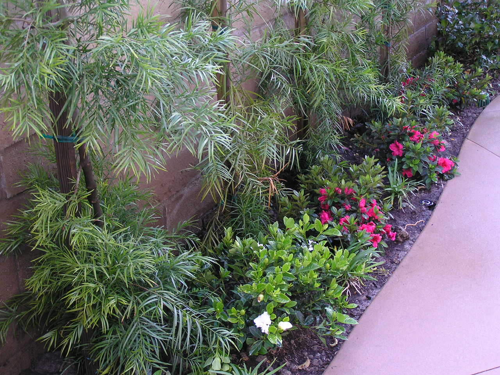

Soil Health Preparation
Enhance your garden's success with expert soil preparation and amendment. Healthy soil is the foundation of a thriving landscape.
Why Soil Health Matters
At Lytle Landscape, we focus on building a solid foundation for your garden. By analyzing and amending soil during the design and installation phases, we ensure optimal conditions for plant growth. Our approach eliminates the guesswork and sets your garden up for success.
- Customized soil analysis and recommendations
- Use of organic amendments to boost nutrients
- Focus on long-term sustainability
- Enhanced plant health and resilience
Our Soil Health Process
1. Assessment
We analyze your soil's composition to identify strengths and deficiencies.
2. Recommendations
We create a tailored plan for soil improvement and plant compatibility.
3. Preparation
We incorporate high-quality amendments to ensure your soil is ready for planting.
Start with Healthy Soil
Contact us today to learn how our soil health services can transform your landscape. Remember, we focus on preparation and design, not ongoing maintenance.
Get Started